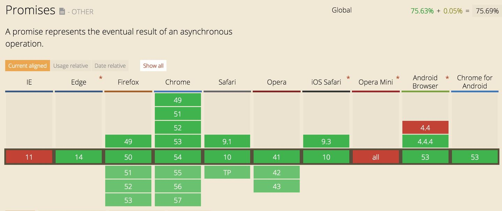
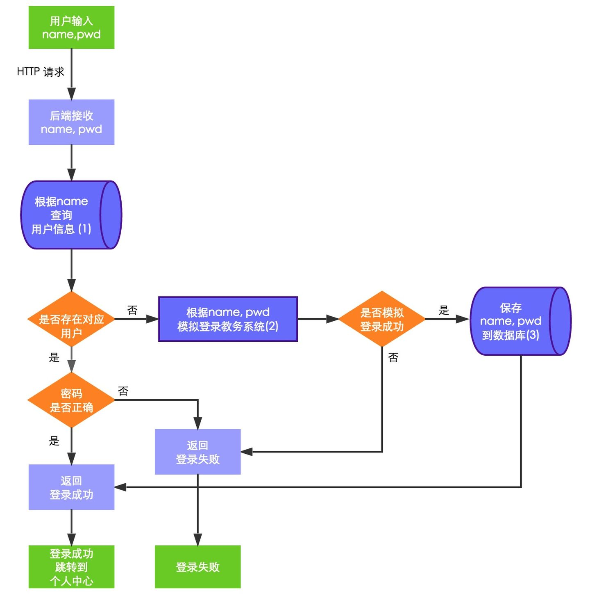
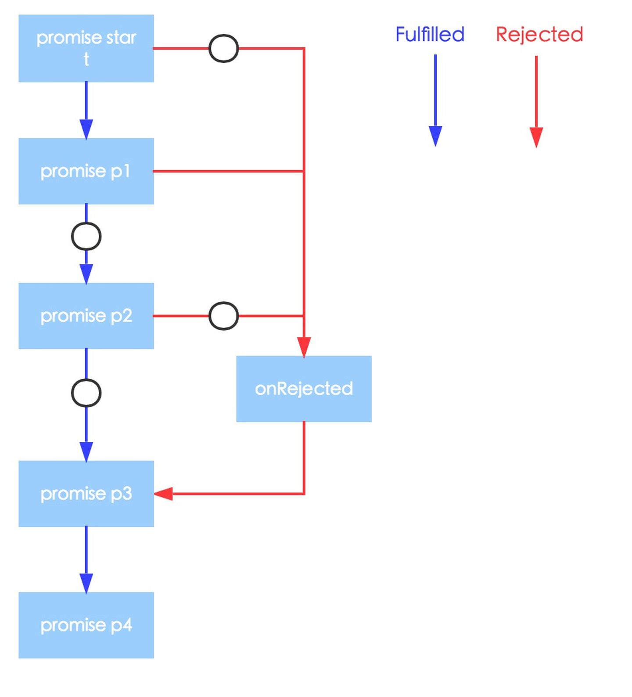

Abstract 🔗
本文主要讲的是如何实现 Promise 的链式调用。也就是 promise().then().then().catch() 的形式，然后讨论如何在某一个 then() 里面中止 Promise。
在程序中，只要返回了一个 promise 对象，如果 promise 对象不是 Rejected 或 Fulfilled 状态，then 方法就会继续调用。利用这个特性，可以处理多个异步逻辑。但有时候某个 then 方法的执行结果可能会决定是否需要执行下一个 then，这个时候就需中止 promise，主要思想就是使用 reject 来中止 promise 的 then 继续执行。
“中止”这个词不知道用得是否准确。这里可能还是 break 的含义更精确，跳出本次 promise，不继续执行后面的 then 方法。但 promise 依旧会继续执行。
Can I use promises 🔗
当前浏览器对 Promise 的支持情况见下图：
http://caniuse.com/#search=promise

Promise 🔗
先简单复习一下 Promise。Promise 其实很简单，就是一个处理异步的方法。一般可以通过 new 方法来调用 Promise 的构造器实例化一个 promise 对象：
var promise = new Promise((resolve, reject) => {
// 异步处理
// 处理结束后，调用 resolve 或 reject
// 成功时就调用 resolve
// 失败时就调用 reject
});
用 new Promise 实例化的 promise 对象有以下三个状态：
-
“has-resolution” - Fulfilled。resolve(成功)时，此时会调用 onFulfilled
-
“has-rejection” - Rejected。reject(失败)时，此时会调用 onRejected
-
“unresolved” - Pending。既不是resolve也不是reject的状态，也就是promise对象刚被创建后的初始化状态等
关于上面这三种状态的读法，其中左侧为在 ES6 Promises 规范中定义的术语， 而右侧则是在 Promises/A+ 中描述状态的术语。基本上状态在代码中是不会涉及到的，所以名称也无需太在意。

Promise Chain 🔗
先来假设一个业务需求：在系统中使用教务系统账号进行登录。首先用户在登录页面输入用户名（教务系统账号）和密码（教务系统密码）；然后判断数据库中是否存在该用户；如果不存在则使用用户名和密码模拟登录教务系统，如果模拟登录成功，则存储用户名和密码，并返回登录成功。
听起来就有点复杂对不对？于是画了个流程图来解释整个业务逻辑：

上图只是一个简化版本，比如密码加密、session设置等没有表现出来，大家知道就好。图中 (1)、(2)、(3) 三个地方就是会进行异步处理的地方，一般数据库操作、网络请求都是异步的。
如果用传统的回调函数 callback 来处理上面的逻辑，嵌套的层级就会比较深，上面的业务因为有三个异步操作所以有三层回调，代码大概会是下面的样子：
// 根据 name 查询用户信息
findUserByName(name, function(err, userinfo) {
if (err) {
return res.json({
code: 1000,
message: '查询用户信息，数据库操作数出现异常',
});
}
if (userinfo.length > 0) {
// 用户存在
if (userinfo[0].pwd === pwd)
// 密码正确
return res.json({
code: 0,
message: '登录成功',
});
}
// 数据库中不存在该用户，模拟登录教务系统
loginEducationSystem(name, pwd, function(err, result) {
if (err) {
return res.json({
code: 1001,
message: '模拟登录教务系统出现异常',
});
}
// 约定正确情况下，code 为 0
if (result.code !== 0) {
return res.json({
code: 1002,
message: '模拟登录教务系统失败，可能是用户名或密码错误',
});
}
// 模拟登录成功，将用户名密码存入数据库
saveUserToDB(name, pwd, function(err, result) {
if (err) {
return res.json({
code: 1003,
message: '将用户名密码存入数据库出现异常',
});
}
if (result.code !== 0) {
return res.json({
code: 1004,
message: '将用户名密码存入数据库出现异常',
});
}
return res.json({
code: 0,
message: '登录成功!',
});
});
});
});
上面的代码可能存在的不优雅之处：
- 随着业务逻辑变负责，回调层级会越来越深
- 代码耦合度比较高，不易修改
- 每一步操作都需要手动进行异常处理，比较麻烦
接下来再用 promise 实现此处的业务需求。使用 promise 编码之前，可以先思考两个问题。
一是如何链式调用，二是如何中止链式调用。
How to Use Promise Chain 🔗
业务中有三个需要异步处理的功能，所以会分别实例化三个 promise 对象，然后对 promise 进行链式调用。那么，如何进行链式调用？
其实也很简单，直接在 promise 的 then 方法里面返回另一个 promise 即可。例如：
function start() {
return new Promise((resolve, reject) => {
resolve('start');
});
}
start()
.then(data => {
// promise start
console.log('result of start: ', data);
return Promise.resolve(1); // p1
})
.then(data => {
// promise p1
console.log('result of p1: ', data);
return Promise.reject(2); // p2
})
.then(data => {
// promise p2
console.log('result of p2: ', data);
return Promise.resolve(3); // p3
})
.catch(ex => {
// promise p3
console.log('ex: ', ex);
return Promise.resolve(4); // p4
})
.then(data => {
// promise p4
console.log('result of p4: ', data);
});
上面的代码最终会输出：
result of start: start
result of p1: 1
ex: 2
result of p4: 4
代码的执行逻辑如图：

从图中可以看出来，代码的执行逻辑是 promise start --> promise p1 --> promise p3 --> promise p4。所以结合输出结果和执行逻辑图，总结出以下几点：
- promise 的 then 方法里面可以继续返回一个新的 promise 对象
- 下一个 then 方法的参数是上一个 promise 对象的 resolve 参数
- catch 方法的参数是其之前某个 promise 对象的 rejecte 参数
- 一旦某个 then 方法里面的 promise 状态改变为了 rejected，则promise 方法连会跳过后面的 then 直接执行 catch
- catch 方法里面依旧可以返回一个新的 promise 对象
How to Break Promise Chain 🔗
接下来就该讨论如何中止 promise 方法链了。
通过上面的例子，我们可以知道 promise 的状态改变为 rejected 后，promise 就会跳过后面的 then 方法。
也就是，某个 then 里面发生异常后，就会跳过 then 方法，直接执行 catch。
所以，当在构造的 promise 方法链中，如果在某个 then 后面，不需要再执行 then 方法了，就可以把它当作一个异常来处理，返回一个异常信息给 catch，其参数可自定义，比如该异常的参数信息为 { notRealPromiseException: true}，然后在 catch 里面判断一下 notRealPromiseException 是否为 true，如果为 true，就说明不是程序出现异常，而是在正常逻辑里面中止 then 方法的执行。
代码大概就这样：
start()
.then(data => {
// promise start
console.log('result of start: ', data);
return Promise.resolve(1); // p1
)
.then(data => {
// promise p1
console.log('result of p1: ', data);
return Promise.reject({
notRealPromiseException: true,
}); // p2
})
.then(data => {
// promise p2
console.log('result of p2: ', data);
return Promise.resolve(3); // p3
})
.catch(ex => {
console.log('ex: ', ex);
if (ex.notRealPromiseException) {
// 一切正常，只是通过 catch 方法来中止 promise chain
// 也就是中止 promise p2 的执行
return true;
}
// 真正发生异常
return false;
});
这样的做法可能不符合 catch 的语义。不过从某种意义上来说，promise 方法链没有继续执行，也可以算是一种“异常”。
Refactor Callback with Promise 🔗
讲了那么多道理，现在就改来使用 promise 重构之前用回调函数写的异步逻辑了。
// 据 name 查询用户信息
const findUserByName = (name, pwd) => {
return new Promise((resolve, reject) => {
// 数据库查询操作
if (dbError) {
// 数据库查询出错，将 promise 设置为 rejected
reject({
code: 1000,
message: '查询用户信息，数据库操作数出现异常',
});
}
// 将查询结果赋给 userinfo 变量
if (userinfo.length === 0) {
// 数据库中不存在该用户
resolve();
}
// 数据库存在该用户，判断密码是否正确
if (pwd === userinfo[0].pwd) {
// 密码正确，中止 promise 执行
reject({
notRealPromiseException: true,
data: {
code: 0,
message: '密码正确，登录成功',
}
});
}
// 密码不正确，登录失败，将 Promise 设置为 Rejected 状态
reject({
code: 1001,
message: '密码不正确，登录失败',
});
});
};
// 模拟登录教务系统
const loginEducationSystem = (name, pwd) => {
// 登录逻辑...
// 登录成功
resolve();
// 登录失败
reject({
code: 1002,
message: '模拟登录教务系统失败',
});
};
// 将用户名密码存入数据库
const saveUserToDB(name, pwd) => {
// 数据库存储操作
if (dbError) {
// 数据库存储出错，将 promise 设置为 rejected
reject({
code: 1004,
message: '数据库存储出错，将出现异常',
});
}
// 数据库存储操作成功
resolve();
};
findUserByName(name)
.then(() => {
return loginEducationSystem(name, pwd);
})
.then(() => {
return saveUserToDB(name, pwd);
})
.catch(e => {
// 判断异常出现原因
if (e.notRealPromiseException) {
// 正常中止 promise 而故意设置的异常
return res.json(e.data);
}
// 出现错误或异常
return res.json(e);
});
在上面的代码中，实例化了三个 promise 对象，分别实现业务需求中的三个功能。然后通过 promise 方法链来调用。相比用回调函数而言，代码结构更加清晰，也更易读易懂耦合度更低更易扩展了。
Promise.all && Promise.race 🔗
仔细观察可以发现，在上面的 promise 代码中，loginEducationSystem 和 saveUserToDB 两个方法执行有先后顺序要求，但没有数据传递。
其实 promise 方法链更好用的一点是，当下一个操作依赖于上一个操作的结果的时候，可以很方便地通过 then 方法的参数来传递数据。前面页提到过，下一个 then 方法的参数就是上一个 then 方法里面 resolve 的参数，所以当然就可以把上一个 then 方法的执行结果作为参数传递给下一个 then 方法了。
还有些时候，可能 then 方法的执行顺序也没有太多要求，只需要 promise 方法链中的两个或多个 promise 全部都执行正确。这时，如果依旧一个一个去写 then 可能就比较麻烦，比如：
function p1() {
return new Promise((resolve) => {
console.log(1);
resolve();
});
}
function p2() {
return new Promise((resolve) => {
console.log(2);
resolve();
});
}
function p3() {
return new Promise((resolve) => {
console.log(3);
resolve();
});
}
现在只需要 p1 p2 p3 这三个 promise 都执行，并且 promise 最终状态都是 Fulfilled，那么如果还是使用方法链，这是这样调用：
p1()
.then(() => {
return p2();
})
.then(() => {
return p3();
})
.then(() => {
console.log('all done');
})
.catch(e => {
console.log('e: ', e);
});
// 输出结果：
// 1
// 2
// 3
// all done
代码貌似就不那么精炼了。这个时候就有了 Promise.all 这个方法。
Promise.all 接收一个 promise对象的数组作为参数，当这个数组里的所有 promise 对象全部变为 resolve 或 reject 状态的时候，它才会去调用 then 方法。
于是，调用这几个 promise 的代码就可以这样写了：
p1()
.then(() => {
return Promise.all([
p2(),
p3(),
]);
})
.then(() => {
console.log('all done');
})
.catch((e) => {
console.log('e: ', e);
});
// 输出结果：
// 1
// 2
// 3
// all done
这样看起来貌似就精炼些了。
而对于 Promise.race，其参数也跟 Promise.all 一样是一个数组。只是数组中的任何一个 promise 对象如果变为 resolve 或者reject 的话，该函数就会返回，并使用这个 promise 对象的值进行 resolve 或者 reject。
这里就不举例了。
Conclusion 🔗
到目前为止，我们就基本了解了 Promise 的用法及特点，并实现用 Promise 重构用回调函数写的异步操作。现在对 Promise 的使用，应该驾轻就熟了。
完。
Github Issue: https://github.com/nodejh/nodejh.github.io/issues/23